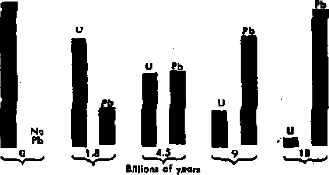
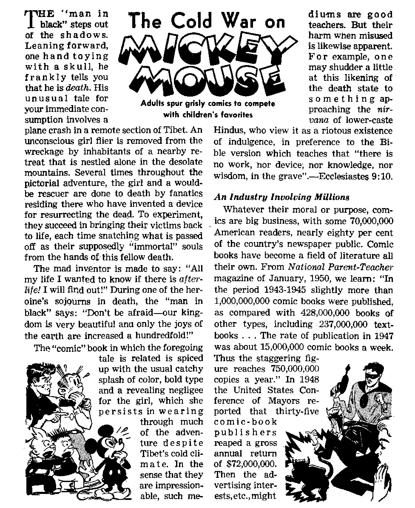

FEBRUARY 8, 1952 semimonthly
THE MISSION OF THIS JOURNAL
New* sources that are able to . keep you awake to the vital Issues of our times must be unfettered by censorship and selfish interests. "Awake I” ho* no fetters* It recognizes facts* faces facts* Is free to publish facts. It Is not bound by political ambitions or obligations; it Is unhampered by advertisers whose toes must not be trodden on; it Is unprejudiced by traditional creeds. This Journal keeps itself free that it may speak freely to you- But it does not abuse its freedom* It maintains integrity to truth.
"Awake I" uses the regular news channels, but is not dependent on them. Its own correspondents are on all continents* in scores of national From the four corners of the earth their uncensored* on-the-scenes reports come to you through these columns. This Journal’s viewpoint is not narrow* but Is international It is read in many nations* In many languages* by persons of all ages. Through its pages jhany fields or knowledge paas in review—go\^emment* commerce* religion* history* geography* science* social conditions, natural wonder^—why, Its coverage is as broad as the earth and as high as the heaveni
"Awake I” pledges itself to righteous principles, w exposing hidden foes and subtle dangers* to championing freedom for all* to comforting mourners and strengthening those disheartened by the failures of a delinquent world* reflecting sure hope for'the establishment of a righteous New World.
Get acquainted with “AwakeT’^Keep awake by reading "Awakel’’
PUBLISHED Semimonthly Bt WATCHTOWER BIB LB AND TRACT SOCIETY, INC.
117 Adama Street Brooklyn 1, N. Y,, U. 8. A.
N. H. Knoha, JVeridrht Ghaut Suites, Secretary
Printing this isatlo; 475,000
Five cent* a copy
Lump* !■ wMth ttb facula* h MbrhW:
StfiUmntiilT—Afrffc>n* Kocllib, Finnish, German, Nweciu. gpanbOL Monthly—Danljb, rmdi, Grotk, P«rtu*u»*, BwedUb. UknfaiuL
OfllOH Ywlf iTOWfipUon Rite
Aaath*. U-S<117 Adans 8t. Brooklyn 1, N.Y, AlMrall*, 11 Btnrfoni fid., Stnttifldd, N.8.W, 8t (Unidt 40 Irwin Are., Toronto Ontario 11 EillFaiio, 3< C»Hn Tterrut. Loudsn, W. 1 n Silrth Afrit*. SUB Bwtc« Home, C*J* Town Tt
Eotand u M«nd-dHa BatUf it SnekUa, K- T.
RanttfanM ktartifa bt tent to afflet la your own' try la eornplhnM with iwpIUtlQu* to tuartntes ufa delivery of money. BeinuUacH uxepted »t Brooklyn from (WktrUt where ng Office In located, by Internntiodsl mooty order wilY- SutMcriptlon r»t»« in different Muntriea va hen staled la tool eumncf. NMItt of ixalntlM (with rouwai blink) li sent at Jeut two issues before riburtyttaa tar pires. Chau* *f addreM wh«a sent te oar office nay be «ps«*d effective within ant month. Bond joar old u wM u an tddTMt.
Art of Mirft 3. 181B. PrlnUd fa V. 8. A.
CONTENTS
Modem Inquisition: the Loyalty Campaign 3
Modern Inquisition: the Smear Campaign 5
The Ant Lion Flays a Walting Game 12
Science and Creation (Part One)
Science and Creation (Part Two)
Science and Creation (Part Three)
An Industry Involving Millions
Clergy Comics Make Comics of Clergy 22
Turning Heat on the "Cold Warriors” 22
Sectarian Bigotry Hard on "Brotherhood” 24 "Your Word Is Truth”
Why Does God Permit Wickedness? 25
The Press versus The Truth 27
Watching the World 29
Ostensible Concern for Security Sabotages Liberties
HE men who formed the United States had a keen appreciation of liberty.
"Give me liberty, or give me death!” is the way they felt about it. And to make sure that their liberty would be preserved they insisted upon a Bill of Rights. A man was held to be innocent until proved guilty; he was not to be deprived of life, liberty or property without due process of law; and he was to be confronted with his accusers.
But today a modern inquisition, ostensibly carried on for the purpose of safeguarding national security, is fast sabotaging that Bill of Rights. On the one hand is the ever-widening loyalty legislation, and on the other a growing smear campaign.
The present loyalty campaign was spearheaded by President Truman’s Executive Order No. 9835, issued March 21, 1947. This order created the Loyalty Board and authorized the attorney general to make a list of subversive organizations. Up until July 1951, the attorney general had listed some 110 groups as subversive and the FBI had checked on upward of two and a half million government employees.
Since the president issued his Loyalty Order, state after state has passed loyalty legislation. On April 9, 1951, Oklahoma passed a loyalty bill which, among other things, required government employees to swear that they would take up arms ip defense of their country and that for the five years immediately preceding the taking of this oath they had not been a member of any group which any authorized public agency of the United States declared to be a Communist front or subversive organization.—New York Times, March 8,1951.
On April 30,1951, the Supreme Court of the United States ruled that the listing of subversive organizations by the attorney general had been made in an arbitrary way and that the organizations so listed had been denied proper hearings to prove themselves nonsubversive and to test the constitutionality of the government’s program. Was the House Committee’s list, six times as long, any more accurate?
Today loyalty boards are condemning men not only for their thoughts, which is bad enough, but also for the thoughts of their friends, relatives and associates. Among the questions being asked are: "Are any of your friends Communists?” "Were your father and mother ever Communists?” "Have you ever associated with any employees who, because of their political tendencies, might be considered Communists?”
Nor is the subconscious mind overlooked: Note this gem: “Don’t you think that subconsciously you are in favor of Communism?”
One employee’s loyalty was questioned because his father-in-law, it was claimed, wurkegL as a typesetter for the Communist Dotty Worker. An investigation revealed that he was working for the rabidly anticommunist Jewish Morning Journo? and that he could not even set type in English.
The New York Times, February 5,1951, told of the government’s demanding the resignation from the officer’s reserve of a World War II veteran who had won the Air Medal three times, “because he allegedly was seen reading the Daily Worker, a Communist paper, and because his sister and father, a pastor of a local church, were identified with alleged Communist groups in an election campaign". Fortunately, an investigation proved the charges false.
Suppose the- man’s father-in-law had been working for a Communist paper, that would not prove the son-in-law a Communist, would it? Why, it would not even prove that the father-in-law was one. Conceivably he could be working there without having any Communist sympathies, could he not? Not all printers engaged in printing Bibles are Christians, are they?
And suppose that war veteran’s sister and father had Communist sympathies. Would that cancel out his war record and make him suspect? And reading the Daily Worker! Is it not possible to read something without being fully in favor of it? He may have wanted to examine their propaganda so as to be the better able to refute it in his arguments with Communists or from the public platform.
Nor is there much redress in sight. An employee who had been discharged on the basis of anonymous information appealed her case to the Supreme Court It ruled against her on the same day it ruled that organizations listed by the attorney general as subversive had been denied proper hearings. Said Justice Jackson tn a dissent: “This is the first time this court has-held rights of individuals subordinate and inferior to those of organized groups. It is justice turned bottom-side up/’—New York Times, May 1,1951.
The absurd extreme to which such a rule may be carried was evidenced in the notice of dismissal one Loyalty Board sent a government employee to this effect: “Paragraph 1. You are dismissed for reasons which are confidential. Paragraph 2. You are given five days to answer charges in paragraph 1/' Could anything be more ridiculous—and unjust?
Tacitly admitting that this loyalty business may have gone too far, President Truman planned a Commission on Internal Security and Individual Rights. Members, however, were not in position to devote all their time to this work, and so they asked to be exempted from the federal statute which would prohibit them from holding other positions.
The president urged Congress to provide for such exemption, but due to the opposition of powerful Senator McCarran, it failed to do so,, and so after months of waiting the president finally gave up the plan. Commenting on this fact, the New York Timest October 29,1951, stated: “It would take a Geiger counter of more than ordinary delicacy to detect any radiations of enthusiasm for the basic freedoms or passion for fair play in any committee room dominated by Pat A. McCarran/’
Well did a Washington Post editorial writer summarize the situation in his book Loyalty w. Freedom: “The most shacking aspect of the whole business is that we have accepted these curtailments of essential liberty for ourselves with no outcry, with no apparent sense of their Implications.”
THE smear campaign of Congressional demagogues presents the other vicious aspect of the modern inquisition. For years now their favorite cry has been “Red”, “Communist,” “Foreign Espionage Agent,” etc. Slander and libel laws restrain ordinary citizens, but these members of Congress have a certain privileged immunity because the Constitution declares that “for any speech or debate in either House they shall not be questioned in any other place”.
The St. Louis Post-Dispatch of April 9, 1950, after editorializing on the abuse of this immunity by Senator Joseph R. McCarthy, continued: “The history of the House Un-American Activities Committee is sordid with unproved smears by association and innuendo. Former Representative Martin Dies of Texas set the pattern as the original chairman of the committee. Re-publican Representative John Parnell Thomas of New Jersey, a later chairman, carried the technique of character assassination to its peak—or depth . , . Democratic Representative John Rankin also must be included in this history. Next to preaching white supremacy, his favorite pastime is the denunciation of even mild liberals as Communists and fellow travelers [Communist sympathizers].”
And as if there were not enough “investigating” by the House Un-American Activities Committee, the FBI, the Federal Loyalty Review Boqrd, the Subversive Activities Control Board, etc,, Senator Pat McCarran had to organize his own subcommittee to investigate internal security. The way in which his committee vies with the House Un-American Activities committee for getting the most sensational headlines could be considered a joke were it not for the great harm done to innocent men by such political shenanigans.
Representative Martin Dies once named 1,121 subversives. The FBI investigated and reported that of the entire number only two “could even remotely be open to suspicion”. Representative Thomas as chairman of the House Un-American Activities committee so persecuted those appearing before him with the “fright technique” that his hearings were termed “inquisitions” by the press.
According to Representative Rankin the Federal Fair Employment Practices Commission would be “the beginning of a Communistic dictatorship the like of which America never dreamed”. Yet all it did was to provide that there should be no discrimination in employment. Is a Rankin qualified to pass on what is American and what un-American?
But actually the depth of Congressional demagoguery was not realized until Senator Joseph R. McCarthy of Wisconsin appeared on the scene. So vile has been his record that a new word has been coined, “McCarthyism.” Said a Congressional committee of his tactics: “We have seen the technique of the ‘Big Lie*, elsewhere employed by the totalitarian dictators with devastating success, utilized here for the first time on a sustained basis in our his-
tory” Said another senator before whom McCarthy appeared as witness: “I have never seen a more arrogant, or a more rude, witness.”
McCarthy claimed that there were 57 “card-carrying” Communists in the State Department; then it was 81, and then over 200. Not one of his charges was based on any new evidence nor was he able to prove them. He made an attack on a certain White House speech writer, making much of the fact that this writer had a relative who was financially interested in the Communist Daily Worker. The writer, whom McCarthy had shrouded with mystery, came forward with the information that this relative was an eccentric great-aunt who had been dead for nine years!
What Are the Motives?
Congressional Committees, ostensibly out to “investigate”, actually are “out to smear, condemn and sabotage the legal activities of all progressive Americans”. Prompted by personal or political motives, they seek to gain the front-page headlines by calling men Communists. Says Time magazine. (October 22, 1551): “McCarthy set up a barrage of new accusations which caught the headlines, drawing attention away from the fact that he had not made good his original charge. ... He never answers criticism, just savagely attacks the critic,”
Giving the lie to their claimed interest in national security shows the length to which these demagogues will go to get evidence to support their attacks. The New York Times, October 15, 1951, told of a Swiss judge ordering the deportation of one Charles E, Davis, an ex-Communist Negro homosexual, because: “Davis sent from Geneva on Nov. 4,1950, in agreement with Farrand [McCarthy's Paris agent], a telegram to Mr. Vincent, with the false signature of [Emile] Staempfli, one of the militant Geneva Communists, to make it appear that the minister had relations in Switzerland with the Communists. He sent to Farrand a copy of this telegram which constitutes a forgery. Davis has received from McCarthy, through the intermediary of Farrand, money for this activity.” Yes, Americans, hang your heads in shame that it is necessary for a Swiss judge to order the deportation of an agent of an American senator, for his efforts to frame a state department official!
Further revealing as to the motives of these Congressional committees is their Use of witnesses who ‘freely spill confessions, opinions, and wild guesses; mingle known facts with barefaced inventions, and launch unsubstantiated charges, naming names'. Although one Andrew Roth had been cleared and the case against him dropped, one of these informers, E. S. Ear-sen, testified that he knew that Roth was a Communist. Why? Because of his “presence right now with . . . the Communist leader of Indo-China” The facts were that at that very moment Roth was in Western Europe.
Time and again Budenz has been called upon to testify, although his testimony is almost invariably based on hearsay and has repeatedly been proved false. For example: In 1950 he refused to identify John Carter Vincent (whom the McCarthy agent tried to frame) as a Communist; but recently, with the prompting of a senate committee, Budenz suddenly remembered that Vincent had been a Communist. He made a like about-face regarding another state department official. A more recent instance wherein Buttenz’ testimony was found false was noted in Time magazine, October 29,1951. Budenz had testified that Wallace's trip to China in 1944 had served the ends of the Communists, whereas subsequent testimony proved that the very opposite was the case.
Fruits of the Smear Campaign
The smear campaign, by robbing people of their means to make a livelihood, is depriving them of their property without due process of law. After a House “investigation” of the movie industry in 1948, a number of foremost writers and authors were blacklisted. And according to the Encyclopedia Americana, 1949, page 543, “An unusual fusion of politics, censorship and entertainment resulted .... motion picture producers became more careful than ever to avoid motion picture plots or scenes which might suggest any trace of Communistic propaganda.’*
McCarthy’s own smear campaign has taken a terrific toll. While such men as General Marshall, Secretary of State Acheson and U. N. delegate Jessup weathered the storm, others have not been so fortunate, A little more than a year ago “senators sat frozen in their seats” as McCarthy hurled charges. At election time he toured the country and played a vital role in a number of senatorial campaigns, most notorious, vicious and despicable of which was the Maryland campaign where McCarthy caused the defeat of Senator Tydings.
Drew Pearson furnishes another example. After McCarthy charged that Pearson was a Kremlin agent and urged a boycott of Pearson's radio sponsor, Adam Hats, that firm dropped him. Writing to a friend recently, Pearson stated: “Hie McCarthy business did keep me pretty busy, to say the least.... At the moment, I am looking around for a new sponsor. I must admit, however, that since McCarthy's speeches, sponsors have been as hard to find as water lilies in the Sahara.”
What Is happening to American liberties when a political smearer is able to so intimidate big business that a popular radio commentator and newspaper columnist, who had had a Sunday night audience of some ten million, is unable to find a sponsor?
McCarthy accused Owen Lattimore, Johns Hopkins University professor and authority on Far Eastern affairs, with being the “top Russian espionage agent”, although he had nothing but flimsy hear* say on which to base his charge. However, the result was that Lattimore overnight became the object of international doubt and suspicion, causing him the loss of speaking appointments as well as involving him in a very costly defense.
Telling of the harmful effect that McCarthyism is having on the American people, Senator Benton, in an interview with the press, stated that it was making the “people timid and gun-shy, hesitant about expressing themselves”. And Mrs. Eleanor Roosevelt stated: “People with new ideas hesitate to bring them forward and people do begin to look with suspicion at almost all of their friends and neighbors.”
Indicative of the fearful attitude of the people is the following item: “On the 175th birthday of the Declaration of Independence [July 4, 1951] reporters of the New York Post and the Capital Times of Madison [Wisconsin] circulated a petition, including the Preamble of the famous document, and were able to get the signatures of only twenty of the 273 citizens solicited.”—New York Times, August 3,1951.
Among the chief targets and victims of the modem inquisition are the schools of higher learning. Concerning the danger, Dr. Alvin Eurich, president of the State University of New York, warned: “We may set up procedures designed to restrict Communists that in turn restrict teachers so much that the heart of the university is destroyed and the pulse will no longer register vital scholarly action.” Along the same trend was the testimony of Dr. Theodore M. Greene of Yale before a senate subcommittee to the effect that college pro
fessors are afraid to teach the facts of communism for fear of being thought Communists.
Under “Americans Fear Knowledge of Communism”, the Manchester G'uardian, Of June 28,1951, had, among other things, the following to say: “The New York Times recently made a survey of the mood of college campuses and gloomily reported that in all parts of the country young people were shying away from a public interest in government or political debate because they are afraid of being thought sympathetic to communism and so endangering their prospects of a job, a decent family life, and the respect of their community.”
Nor is the government itself escaping unscathed from the effects of the smear inquisition. During October and November 1951, the New York Times repeatedly told of a serious decrease in applications from college students for jobs with the State Department. When inquiry was made as to the reason for this, the colleges replied that the chief one was “the relentless effort of certain members of Congress to prove that there simply must be traitors and Communists in the department”.
Who Is to Blame?
Obviously the liberties of the American people are being sabotaged. And from the foregoing it is also apparent that those bearing the lion’s share of the blame are President Truman, for his Loyalty Order, the smear campaigns of the House Un-American Activities Committee and Senator McCarthy, and Pat McCarran for, among other things, his opposition to the Nimitz Commission,- which commission might have remedied matters.
Another factor is politics. “Respectable” Republican senators are . only too glad to have McCarthy do some dirty work for them by getting the Democrats in hot water. And for the same reason Congressional
L» O
committees will give sensational and irresponsible witnesses such as Budenz the utmost publicity while denying it to a former vice-president of the nation when he is called upon to present his side.
The radio and press also must share the blame. The Capital Times, of Madison, Wisconsin, September 11, 1951, under the heading “Radio Surrenders to McCarthyism”, referred to a previous editorial in which it charged that the Associated Press and the United Press news services were “slanting and manipulating news reports in favor of Senator McCarthy of Wisconsin in order to fit the bias of big and conservative newspaper publishers who control and dominate these news services”. It then went on to show how the radio networks, such as the NBC, “dare not permit a word of criticism of McCarthy on [their], broadcasts without running to McCarthy to give him the immediate opportunity to blackguard all critics and opponents with his guilt-by-association technique.” The writer then gave proof of how the NBC had censored from a speech, which he had prepared at their request, ail references to McCarthy's shady VVisconsin public record.
Nor would an assessment of the blame be complete without pointing to the role that the Roman Catholic Church plays in this modern inquisition. Has not she, more than any other one agency, worked up hysteria over the Communist threat, and are not the tactics used essentially those employed by her to gain her ends? Is not McCarthy, therefore, her hatchet man even more than he is for the Republican party and the real estate lobby? Time magazine tells that McCarthy “seldom misses Sunday mass”. Certainly someone is neglecting a golden opportunity to instruct a “good Catholic” in the principles of truth and righteousness!
Another Catholic favorite son is Budenz. The flaunting of his reconversion to
, t IF a zc e i
Catholicism has tended to give art air of sanctity to his worthless and worse-thanworthless testimony, causing Senator Chavez, himself a Roman Catholic, to state that Budenz was using the “cross as a club”. As a professor of the Roman Catholic Fordham University Budenz certainly cannot plead ignorance. And when Pat A. McCarran visited the pope just a few years back, he took so many rosaries to him to be blessed that the pope observed that he didn’t know that there were so many Catholics in the United States!
Veterans’ organizations are also to blame. Facts at hand indicate that they serve as the “sword of the Catholic Church”, particularly the American Legion and the Catholic War Veterans.
And finally the people are to blame; they follow the lines of least resistance. How many today could say and really mean it, “Give 'me liberty, or give me death!” Steaks and liquor, clothes, sports and other amusements mean more to them than their basic freedoms. Meekly they are allowing an anti-Communist campaign to give them a totalitarian mental attitude. The jest regarding the Statue of Liberty may yet come true: “It stands where it belongs—on freedom’s grave!”
ALONG, long story it is, the tale of textiles and thread, of needles and thimbles, of patterns and fashions, for since the garden of Eden folks have been making clothes out of about evcry-
ing has undergone many revolutionary changes during the past several thousand years. There was a time when plant leaves and animal skins provided practically all the clothing that was
thing from fig leaves to test-tube fabrics. How to hold the various materials together in an efficient manner and at the same time ■make them hang well in a comely and appealing way is an art and science. And because sewing is an artistic science, mastered only after much study and practice, it is not surprising that few women are qualified to make their own clothes. More might be encouraged to do so if they knew the basic fundamentals, the joy and pleasure it can bring, and the romantic history associated with sewing.—Genesis 3:7.
Like everything else the science of sew-used. Then came the discovery of fibers, animal, vegetable, and, very recently, chemical fibers. The ancient Egyptians were the first to make linen out of flax. The Babylonians of old spun wool into cloth. The use of cotton originated in the antiquity of India at a date older than the historical records of that country. The silk worms have been exploited by the Chinese from time immemorial, in the nineteenth century John Mercer learned how to treat cotton with chemicals to turn out “mercerized” fabrics.
Several synthetic substances have come from the chemists’ workshops in this twentieth century and have proved themselves useful materials for clothing for even the royalty of society. Rayon became a substitute for silk. Nylon, made from the basic compounds of coal, air and water, in many ways is superior to rayon. Orlon has the mixed characteristics of both silk and wool. Vicara, from corn, boasts of having the feeling of cashmere. In other materials are found the elements of casein and silica. Chemical research has also made certain textiles mothproof, mildew-proof, fireproof, waterproof, wrinkleproof, and even shrinkproof.
Advent of the Needle
Parallel with the history of textiles is that of /the tools and machines by which fabrics are made. The most primitive needles were constructed out of fishbone, ivory and thorns. Later better needles were formed out of gold and silver and bronze. Whether it is true that the Chinese of old were the first to use steel needles, modern steel needles began to be turned out in quantity in Germany in the fourteenth century. England learned the secret two hundred years later. Patents on mechanical sewing machines began appearing at the close of the eighteenth century, but it was another fifty years or more before practical sewing machines were placed on the market.
“Thumb-bells,” at first made of leather and later of bone and gold and silver, are said to have been invented in Holland about the year 1100, These little bellshaped sewing accessories were so called because originally they were worn on the thumb. Nowadays the thimble is worn on the middle or second finger, and is still a great aid to the speed, efficiency and the pleasure of sewing.
Progress in mechanical cloth-making and sewing devices also was rather slow. At first fibers were twisted into threads by hand. Then the Egyptians made a distaff on which to hold the fibers and a spindle on which to wind them. But not until the sixteenth century did the use of the spinning wheel, an invention of India, spread across Europe. The original hand looms later became semiautomatic contrivances, and then weaving was greatly speeded up with the invention of the flying shuttle in the year 1738. Thereafter, the heavy loom, the spinning frame, the spinning jenny, and the cotton gin, each in turn became a landmark of progress in the production of fabrics. Today ingenious machines turn out all kinds of textiles, and can do about everything but think. Consequently, sewing begins nowadays, not with spinning and weaving, but with finished materials in ten thousand varieties.
In olden times when the costume consisted of flowing yardage of cloth draped about the body, the only fastener needed was a pin or two. Many of these took on elaborate forms, like the modern brooch, and thus served as ornaments as well as fasteners. For a time in the Middle Ages string lacings drawn through eyelets like shoelaces were popular for holding garments together. Buttons—all sizes, shapes and designs—then came into general use and have continued to this day as the most common means of closing up the fronts of shirts, blouses, coats, etc. It has been only during the last hundred years that such contrivances as snaps, hooks, and the now popular slide fastener, or “zipper”, were invented, as well as that all-important invention, the common safety pin.
And speaking of devices for holding clothes together and in place, one should not overlook the seamstress’ thousands of stitches. These may be classified as running stitches, back stitches, slip stitches, catch stitches, or as overcasting, basting or hemming stitches. Each is of a particular design and serves a particular function.
Each is made with a particular twist of the wrist, thrust of the needle, or maneuver of the hands or material. Just when each was first employed is not known, but until the beginner learns when and where to*use these various stitches, and how to make them with speed and skill, she should not go on to the more important and difficult tasks of designing, pattern-making and fashioning of garments out of raw fabric.
Paper patterns, so universally used today, have not always been available as a dressmaker’s ready assistant. There was a time when someone first stumbled on to the clever idea of first making a pattern, and then from the pattern making the garment. It is believed that th$ first patterns were crude carvings out of heavy stone. Later on thin wood was used and still later cardboard patterns were made. In 1863 the first commercial patterns, named Butter-ick after their maker, were placed on the market. Then along came the improved McCall patterns. Vogue entered the pattern business, followed by the famous Simplicity and Advance patterns. Altogether, each year, nearly a hundred million sewing patterns are sold.
Bulges and Bustles
All kinds of dressmaking forms and contraptions have been used during the last 150 years, besides the above-named patterns. In an effort to duplicate the human form, muslin stuffed with cotton batting first appeared. Then somebody made a form out of wires upon which puffs and padding were attached here and there, to represent the individual customer’s peculiar bulges and bumps. Various wax and rubber forms were also tried out. Pressed papier-mache was hailed with enthusiasm when first brought out. Today, however, other types and improvements are in use.
As for the history of fashions, it is really a history of a thousand languages, cultures, races and creeds, a history of times and seasons, of fads and fancies. The ancient Egyptian or Grecian or Roman could be identified by the costume worn. Similarly, the styles of Medieval and modern times may be dated, as for example, the wasp waists of the sixteenth century, the stay-your-distance hoop skirts of colonial days, the high-waisted “Empire gowns” of Napoleon’s time, the preposterous bustles of the ridiculous Victorian age, the shapeless silhouettes of the riotous 1920's, and the radical “new look” of post-World War II. Of a truth, the sewing needle has left an impression on the pages of history almost as great as the legislator’s pen or the soldier’s sword.
After this brief look at the past, let the seamstress of today rejoice over the modern tools and materials at her disposal. No longer does she need to spin and weave her own cloth. No longer does she need to use fishbones for needles. No longer does she have to wear her fingers down to the bone for lack of a thimble. Neither does she have to fashion a gown without a pattern nor use a clumsy one made of stone. Instead of spending long tedious hours putting in seams and hems by hand, in a few minutes she can do the job on a mbdem high-speed sewing machine. And, praise to the overlords of fashion, the modern dressmaker no longer has to slave away making great Spanish pleated collars, elaborate and delicate lace, great trains of skirts to drag the ground, or petticoats by the dozens. No, with modern equipment clothes-making is easy, and with simplified modem designs it can be a lot of fun too. Now one can enjoy the higher artistic*values of dressmaking. Like painting a picture, sewing should be looked upon as a form of art, and can be engaged in for the sheer pleasure and satisfaction it affords.
the potent jaws, this time to suck dry the dead insect zbef ore discard* Ing the withered remains.
But such antics, while consuming most of the ant lion’s life, are by no means the extent of its ambition. As if the ugly form marking its digging days was only a crude experi
THE ant lion may never have heard of the axiom about building a better mousetrap, but it certainly applies the principle. You would not think this insect a talented creature. Its unimposing, one-third-oi-an-inchlong body is mounted on six weak legs that somehow can move it in only one direction—back' ward.1
But if the ant lion cannot "get very far” in the world, it can dig. This trait and its pincerlike jaws that inject a deadly toxin into small insect victims (frequently ants) prove sufficient. Sandy or dusty locales are suitable to the ant lion, which digs by moving backward (of course I) in a circular fashion, pushing the Band over him and throwing it up and away with flips of its head. If larger pebbles are encountered, they are carefully balanced against the end of the body and pushed out of the way. When the digging is over, the average pit may have a mouth of about two inches and be half as deep. The slopes are glassy smooth and at the bottom the builder lurks unseen beneath the sand.
^The ant lion watches and waits, often for days. At last, perhaps a Ione, sight-seeing ant Ventures too close to the crumbling rim. The footing gives way, and In he slides! The ant might have heard of such traps, he struggles to climb out; but from belbw his adversary now boldly appears and kicks up a barrage of sand which sprays down on the climbing ant and sweeps the ant down in a miniature landslide. The victim topples into the waiting lap pf his host, then a quick injection from the hypodermic-like jaws and it is all over. Next, the host drags the now non protesting visitor under the sand and keeps a patient appetite waiting yet a little longer until the poison does Its further work of dissolving the ant's body contents/Then the ant lion will again employ ment, it does not even carry a fully completed intestinal canal! It is estimated that from two to three years is required for the creature to reach the adult 'Stage, when its big change occurs. Perhaps our tired old assassin, by then weary of his career of ambushing unwary callers, decides to "renounce the world”. At any rate he holes up in a cocoon.
(L However, in building the cocoon, the ant lion, dwelling beneath sand, must be careful not to get any inside the finished product. The German authority Redtenbacher says the insect, on its back, "moves the spinneret about in circular, spiral and confusedly irregular paths. Since the sand grains are thus cemented together by the sticky strands, there arises a confused band of sand,
which is gradually consolidated to form a hemisphere.” Then the insect turns around, makes another such hemisphere, joins the two together and rolls
over inside, prepared to. sleep for almost two months.
And when the slumbering one breaks out of the cocoon, lo, what a change! Can you imagine your own reaction if, looking in a mirror on rising
in the morning, you saw an entirely new reflection? Now the ant lion is no more a "sandhog'", but an aviator. Its now long, slender body measures three inches, and it has sheer wings that spread out and bear it aloft. In this form it has been likened to a dragonfly.
The "new look” ant lion is now in its "last days”. Fittingly, therefore, it now devotes itself with singleness of purpose to the one thing now left for it to do; reproduce Its kind. It does not even eat in this stage. The female has but a few days to mate, then lay its eggs in the sand. Though seemingly unbelievable, the tiny oddity described earlier will Anally spring from the egg of the totally different-appearing winged adult.
This article, complete In this issue but divided Into three parts, presents some of the latest findings of scientists regarding the age of the earth and the universe. Its writer Is qualified in this field, he being a scientist regularly employed in atomic research.
IS IT true that the discoveries of science leavq no place for the creation of the heavens and the earth as described in the Bible? Such an impression has been fostered by atheistic scientists who have sought to find entirely “natural” mechanisms for the formation of the universe and for the origin of earth’s living things. Far from being merely agnostic, as they usually prefer to describe their belief, many scientists have adopted as a matter of faith the principle that no intervention of a Creator into the operation of "nature’s” laws, as they understand them, is to be tolerated, They are unwilling to admit the existence of a Being who might have an understanding and control of natural forces and laws that they have not yet discovered, As a part of this faith they adopt the false religion of evolution, which has its only logical basis in the premise that there is no God. Prejudiced and blinded by their slavish adherence to materialistic doctrines, they are frequently unable to appreciate the real significance of their own discoveries.
On the other hand, the fundamentalist religionists hold doggedly to the traditional interpretation of the Bible as it has been handed down through the orthodox religious denominations. They insist that God made the earth and the rest of the universe in six 24-hour days, in the year 4004 B.C., according to Usher’s chronology, and reject without consideration the evidence presented by science that our universe is older. Typical of their attitude is the case of the elderly Methodist lady who, after inspecting the deposits of dinosaur bones in the national park in eastern Utah, went away insisting that Satan had put the bones there to deceive men.
A reasonable person is willing to put aside prejudice and consider the facts. One can learn much from the facts discovered by scientists, even though he may not subscribe to their theories for explaining the facts. So let us examine the evidence science can give us as to when and how the earth came into existence. At the same time, the testimony of the Bible is not to be rejected as mythology and folklore. Anyone who has taken the trouble to examine it recognizes that the Bible bears evidence within itself of greater than human wisdom. No other history is as old or as reliable as that contained in the Bible. So let us also examine without prejudice what the Bible has to say of creation. Since the Bible is true, and Jehovah who created the heavens and earth is its author, there is no reason to fear that it will be found in conflict with what we discover in studying the things he created.
FOSSHS IN SEDlMEbHAftY ROCKS
WMERMLl
EROSION
OCEAN WAVEstrata
SA-T CONTENT QT EA1?TH
Man has found many curious and wonderful things in the rocks under his feet* He has noted igneous rocks like granite, made up of tiny crystals of various minerals formed by the solidification of a liquid magma. He has distinguished between these and the sedimentary rocks, laid down flat, layer upon layer, by settling out of running water, but often tipped, up-ended, or contorted by the action of geological forces which he cannot yet understand. In the sedimentary rocks he Sometimes finds the petrified forms of once-living things, leaves of familiar plants, the trunks and bark of trees, insects, fish, the skeletons of reptiles and land animals. He also finds the skeletons of bizarre creatures which no longer live on the earth, great mastodons, saber-toothed tigers, winged dragons, 65-foot-long brontosaurs, terrifying 18-foot-high tyrannosaurs.
Such animals have not been known in the few thousand years of man’s history upon the earth, and it is natural to wonder how long ago they lived. Paleontologists have made the rocks and fossils their special field of study, and they have tried by various means to estimate the age of these deposits. There are considerable uncertainties in most of these methods, and it is curious that the calculations which yield the greatest ages are generally preferred.
For example, Niagara Falls is believed to have had its beginning when the last ice sheet, from the so-called Wisconsin glacial age, melted back from the Great Lakes region between the United States and Canada, and Lake Erie began to drain north through the Niagara river. The age of Niagara is calculated from the present rate of gearing back the edge of the falls (3.5 feet per year) and the length of the gorge (7 miles) to be about 10,000 years. However, this seems too short to the geologist, and most of the textbooks conclude by saying that a time of about 35,000 years Is generally accepted. This upward revision is directly contrary to the fact that the recession of the falls has been steadily decreasing since surveys were started in 1842, and is now at the lowest rate in history. From 1678, when the French explorer Hennepin first mapped the falls, until 1842, the gorge was cut at an average rate of 7 feet per year, which would make its age only 5,000 years. Considering the uncertainty in the recession over past centuries, and the fact that no allowance has been made for occasional falls of 100-foot blocks of the crest, such as occurred in 1931, it appears perfectly reasonable to fit the age of Niagara Falls into the time since the world deluge, which the Bible fixes at 43 centuries ago.
Another clock for measuring geologic time is the rate of accumulation of salt in the sea. It is assumed that the salt from the rocks eroded away by rain has been carried by the rivers into the ocean and left there upon evaporation. The presentday salt content of the ocean can be measured by analysis and by estimating the volume of water in the seas. The figure is enormous, 16 thousand million million tons. The rate at which rivers are now carrying salt into the sea can be estimated by stream gauges at the mouths of the great rivers and by analysis of the river water. This comes out about 160 million tons per year. Dividing one by the other gives 100 million years as the age of the ocean. One would think this would be a satisfactorily long time, but the geologist finds it much too short and concludes that his clock is running too fast. Here again, wishful thinking is evident, for it is at least equally likely that the rocks eroded faster in the past, and the clock is now running too slow. “Since so many uncertain factors are involved, the method at present offers
no promise of a reliable quantitative value.”1
Yet another natural process which might be used as a geologic clock is the rate of laying down sedimentary deposits. For example, a 3,000-year-old statue of Ram-eses II was found buried in the Nile flood basin under nine feet of river-laid deposits. This indicates an average deposition of 3.6 inches per century from the annual Nile flood. Of course, the yearly deposit of sediment at the mouth of the river, where it accumulates the year round, would be thicker. In fact, deposits on lake bottoms are believed to build up at a rate measured in inches per year. By measuring the sediment carried into the ocean, an estimate can be made of the length of time required to build up the entire volume of sedimentary rock now found on the earth’s surface. However, this calculation again gives a shorter time than is desired, and so the geologist assumes that the present-day rate is too high, and that the earth is wearing down faster today than during its earlier history. This clock, then, also runs without a governor and does not keep accurate time. “It is already evident, therefore, that a study of the rate of formation of sedimentary rocks can give us no exact results for the total length of geologic time.”}
There is one special type of sedimentary deposit which appears to offer more promise for dating. This is varve clay, which consists of alternate dark and light layers formed in the bottom of glacial lakes. These are supposed to have been laid down in annual layers, the dark clay in the summer when the lake was stirred up, and the fine light-colored silt in the winter when it was frozen over and quiet. On this ba^is, the geological clock would be read as simply as counting tree-rings, one layer to a year. This clock is the one chiefly relied on for the 35,000-year period since the last ice-age. However, such varves have been observed to occur in reservoirs during flood periods, one set of three “annual” layers being formed in a two-week period.1 So perhaps the 35,000 supposed years are only 35,000 rainy spells in a much shorter span of years. Clearly, this clock is not to be trusted, if one cannot tell the hour hand from the minute hand.
It is evident that the paleontologist has no reliable means of determining the age of fossils found in such sedimentary rocks. In newspaper accounts and popular books they are always willing to guess an age— say 50,000 years, or half a million years— the bigger the guess, the bigger the headline. But in the accounts of these fossils carried in scientific journals the age is seldom mentioned, since no scientist would take it seriously anyhow. To illustrate, the anthropologist Professor R. Broom of South Africa has recently published a book called “Finding the Missing Link”, in which he estimates the ages of his fossils in figures ranging from 200,000 to 2,000,-000 years. Commenting on this, in a book review, Professor P. G. H. Boswell, says, in Nature., Vol. 166, page 839 (Nov. 18, 1950):
“Incidentally, it must be remembered that these figures and others in the book are no more than guesswork, and the preliminary word of caution about them may be overlooked or forgotten by the reader entranced by their repetition. We often tend to lose sight of the fact that measured chronology takes us back no more than 20,000 (or possibly 30,000) years; beyond that, all is speculation until the radioactive mineral time-scale comes into operation many million years earlier.”
* A. E. Wood, in the Bulletin of the Geological Society of America, Vol. 57. page 1245 (1946).
IT APPEARS that, so far, we have not made much progress toward answering the question, “How old is the earth?” Even the measured chronology back to the ice age may be two to five times too long; “beyond that, all is speculation.” But the last words in the last quotation of the preceding article call to our attention another time scale, the radioactive clock.
One of the most important of these radioactive clocks is based on the radioactive decay of the heavy element uranium. A piece of uranium looks very much like any other metal, but upon careful examination we find that a small proportion of the uranium is constantly changing into the element lead.2 If we wait long enough, the uranium will eventually change completely into lead. But it is a very slow process. In our whole lifetime, according to the present life span of man, only about a one-hundred-millionth part will have changed.
Nevertheless, the rate at which it changes is very definite and has been accurately measured. From such measurements it can be calculated that it would take 4.5 billion years for half of the uranium in our sam-pie to change into lead. If we started with one pound of uranium, after 4.5 billion years we would have eight ounces of uranium, and eight ounces of lead. After another 4.5 billion years half of the remaining uranium would have changed to lead, so 9 billion years from now we would have 4 ounces of uranium and 12 ounces of lead. After 18 billion years we would be down to one ounce of uranium and up to 15 ounces of lead.2 Since there is always half as much uranium at the end of any 4.5-billion-year period as at the beginning, it would take a very long time for the last atom of uranium to change to lead.
From these numerical illustrations, it is evident that the proportion of uranium to lead varies continually with the age of the uranium mineral. So the amount of lead in any sample of uranium serves as a clock by which its age in that mineral can be determined. Of course, the sample must be old enough to contain enough lead to measure. After 65 million years one per cent of the uranium will have changed to lead, so the uranium clock begins to tell time only after tens of millions of years.
Such a clock is found in igneous rocks containing uranium minerals. As the molten rock cooled, crystals of the uranium mineral separated from other elements in the magma, thus setting the clock. The
* Actually, the weight of the lead would be somewhat less than the round numbers given, because some weight is carried oft by the alpha rays emitted In the radioactive disintegration.
u
DECAY OT WAN10M (U| MTOIEAD lPb>
clock ticks away with disintegrating uranium atoms, and the lead atoms are left in tne crystal as a record of the time. Today the geologist digs up the rock and the chemist analyzes it for lead and uranium; this tells how many millions of years the clock has run since the rock cooled.3
Why is the radioactive clock superior to the other clocks geologists have used? It is because the rate of radioactive decay is absolutely steady, unaffected by external conditions. A waterfall cuts through rocks of differing hardness, and the rate of cutting changes with each rock. But suppose the uranium minerals are subjected to differing temperatures because of crustal movement or volcanic action. We do not need to worry about our uranium clock, because in the laboratory it has been checked at temperature extremes all the way from liquid hydrogen to the electric furnace, with no effect whatever on its rate of radioactivity. Again, as the hills wear down, the gentler slopes will erode more slowly. But in an old sample of radioactive material, the rate of decay of the surviving atoms is not in the least affected by the circumstances of their having already lived many times the average life span of its kind. Where other clocks give dates no better than guesses, the radioactive clock runs accurately.
The ages recorded by this clock cover a .• But, you may ask, how can we be sure that the Mad found with the mineral was formed from the uranium? Maybe It happened that some lead was included in the mineral when it crystallized, and so the dock wasn't set to zero. The answer to this question is that we can distinguish ordinary lead from the lead formed by the decay of uranium, by means of its Isotope3. Ordinary lead consists of a mixture of isotopes, with atomic weights 204, 206, 207, and 20S. Lead formed by decay of uranium Is nearly pure 206, with a little 207. So when we find the lead contained In the uranium mineral is chiefly 206. with no 204 nor 208, we know It came from tile uranium.
tremendous range of time. Some rocks are so young that they do not contain enough lead yet to give any reading on the clock: the hour hand has not moved away from zero. They must be less than ten million years old. Some show ages of 25 million years, others a hundred million. Still other specimens gathered from various parts of the earth have been accumulating lead for hundreds of millions of years, and some have ages exceeding the billion-year figure. In a few of the very oldest, one-fourth of the uranium has decayed to lead, showing that the mineral deposits are right around 1,800 million years old!3
Since the radioactive clock says that some rocks in the earth’s crust have been in their present form for almost two billion years, this would indicate that the earth itself must be at least this old. t
While this conclusion is completely at odds with the fundamentalist view and Usher’s chronology on the date of creation, it is not contradicted by the inspired account in Genesis/which shows that the earth was already in existence before the beginning of the six creative periods. After the statement of the creation of the heavens and the earth, we read: “And the earth was waste and void;
and darkness was upon the face of the deep.” (Genesis 1:2, Am, Stan. Ver.) How long after the Initial creation the earth lay waste and void, before Jehovah stated with respect to the earth, “Let there be light,” and thus opened the first creative day for preparing it for habitation, the Bible does not say. The paleontological record indicates that by far the greater part of the two billion years was spent in this condition, a waste and void of any living form.
It is noteworthy that no fossils are found in these rocks with the uranium clock. Sedimentary rocks, in which fossils are found, contain so little uranium that the necessary analyses cannot be made. Hence the uranium clock cannot be used to date fossils, but only igfleous rocks.4 The claimed ages of hundreds of millions of yearsgiven to dinosaur bones and other fossils by the evolutionists receive no support from the radioactive dating, but remain guesswork and speculation. No scientific proof is yet forthcoming to disprove the sympjjpp^that all living things
were brought forth during creative days of 7,000 years each, equal in length to the seventh day of rest.—See “The Truth Shall Make You Free?4, pages 56, 57,
ANOTHER interesting^conclusion drawn from the science of radioactivity is that all the matter in the universe was cfeatgd at one time; th e gycejs byjvhich the^IementsJ^grg- joBnepid^t'extmcl f erentji^sin^dincrentparEToTlheunb venS/ThiiTevicJenSe^
ftieproportions of different isotopes in elements where at least one of the isotopes is radioactive. For example, uranium as found in the earth has two forms, differing in atomic weight and tn rate of decav. Tt Js thejcommoryisotopeof weight^2^A that has the half-life of 4.5 billion years. A rarer isotopenoF^wei^t^oJd^ys more quickly, with a half-life oftff So rmilToi^ years. Now it is a striking fact that all the uranium, wherever found, always has these two isotopes in the, same proportion, one part o<^SSoijOjgaLrts^of23^Since at least some of these^sanJles^ofTTraniurn have been in existence for about 2 billion years, a rnajor jHirtj3fg^ must haye decayed si^ceTteforniaTion?^ut^ TfiSerenF^sa^ "^esoFuraniumlia.d been jormed at different times, the older samples"wouja toBay contain much less of the shorter-jived 235, Thaf this Is not true shows that all of i1 was formed at the same time, presumably the date of creation.
.-An even more striking case is found in (potassiunj) which has, in addition to stable isotopes of weights 39 and 41, a rare iso tope of weight 40 which is radioactive, decaying with a half-life of 1.2 billion
years. Here again, samples of different age would contain different proportions of po-taaslum-40. But all the potassium
on the eartbrbfitalso po>^ssium fou&d-4rr metgpvtt^sThas exactly theS^pKlsotopic composition, and therefore the same age. This is true dven of potassium from meteorites which are believed, because of the speed with which they struck the earth, to have originated outside the solar system. The conclusion is that all the potassium in the universe originated at one time. This elipunates any continuing process Of evojution, Rut pointsj^the^reation ■of thc-elemente as-a dpfiflite act at^fWed
So from the science of radioactivity, we learn that the earth's rocks were formed as far back as 1,800 million years ago, from elements which were created throughout the universe at some previous time.
From the entirely different science of astrophysics we can trace out another line of evidence which points to5 the time of creation. Let us turn our attention from the tiny atom to the immense galaxies which populate the universe. After we get our perspective adjusted, we recognize that each of these galaxies contains myriads of stars, like our own Milky Way. Some are close enough to be seen with the naked eye, like the Clouds of Magellan in the southern sky. Many others become visible through the telescope. They are seen in great numbers on the photographs made with the 100-inch lens at Mt, Wilson and the 200-inch giant of Palomar.
The distances of these galaxies can be estimated from their brightness, just as the distances of approaching automobiles on a straight road can be judged at night by the brightness of their headlights. Those clear out at the limit of vision of the Palomar telescope are just about one billion light-years away 5 Here is food for thought for the orthodox fundamentalist-heavenly bodies, a part of God’s visible creation, so far away that it takes their light a billion years to reach us. If the light coming to the earth today started on Its path from that distant universe a billion years ago, surely it must have been in existence that long ago. And if that galaxy is a billion years old, why should we think that our own Milky Way is younger? But even more definite evidence is to follow.
These great island universes move, apparently at random, through the vast reaches of space. They are at such great distances that even though they are traveling at speeds of hundreds of miles per second, it would take thousands of years for us to detect their motion across the sky. Curiously^thpugh, it is much easier to detect^andevenSqcasure thetp-rifotion to^ardor away fronvqsjlhiffls because such motion in the line ofsight affects the frequency of the light which reaches us, just as the pitch of the horn on an automobile is higher when it is approaching and lower after it has passed. In the same way, the light from a celestial object pwv-
•21-^
moving away from us, its light is shifted toward (the ~fedxBy measuring the change in frequency of light from any galaxy it! is possible to calculate quite simply whether that galaxy is approaching or receding from the earth, and just how fast.
Light from nearby galaxies is found to be shifted both to the violet and to the red5 In our immediate neighborhood, that Is, within about a million light-years, a galaxy may be moving either toward or away from the earth, With a speed up to some
Falfit^r, more distant ones, are shifted predominantly to the red. They are moving away from us, and with higher average speeds. In fact, the fartheraS^^a^ansfl^nsTTfie Taster it is moving away/Ihe most distant
of all, those barely visible in the largest telescope, are with tremendous
speeds, as much a^OtOOCjfrniles per second. If the small random movements are ignored, all the galaxies in the universe are seen to be moving away from us with speeds which are in proportion to their distances from us.
At first sight it might seem that all the rest of the universe is fleeing from the galaxy which contains our earth. A little reflection, however, will show that .if the whole universe is expanding uniformly, an ^hsArvpr in any part of it will see all other jgrts receding from him, with speeds pro-jortional to their distances, just as we see :hem doing. This remarkable picture is generally referred to as the expanding miverse. It is such a startling idea that istronomers have been somewhat relucant to accept it as a true explanation of he shift towardfhejsed in the light from he distanj^galaxies, btlKqo one has yet propounded any altemative^hQrt of scr^p-pkfgthe whole foundation of phySicaflaws.
The most interesting feature of this remarkable discovery, from our present standpoin^-iS^jat it puts^-dcfmitbsjime linpt^jfTthe agebf^h^'universe. If alt of jtSis is uniformly expanding, there must have been a time in the past when it was all very much closer together, and when the expansion began. If one galaxy is twice as far from us as another, and it is moving
bo^i^fjhemjnust have
courses at the
ime.
is a simple
Taking, for example, the distance of one of the faint galaxies as 120 million lightyears, and dividing this distance by its observed speed of recession, 12,000 miles per second, gives the time of tlie beginning as 1,800 million years ago?
* It Is this scientific calculation, based on the theory of the expanding universe, that “This Means Everlasting Life” refers to on page 21.
That this time coincides so closely with the age of the earth as given by radioactive measurements seems too remarkable to be a mere chance. It may well be direct scientific evidence for the creation of the universe. Many scientists have so accepted it; the noted nuclear physicist Professor George Gamov has written a series of speculative articles on what he describes as the “creation” of the elements and of the universe.6
So from a study of these objects so vastly different in scale, the incomprehensibly small nucleus of the atom, and the immense galaxies separated by unfathomable distances—the smallest and the largest objects in the material universe—comes concordant evidence in support of the act of creation. And these two unrelated and independent phenomena are even in numerical agreement as to the date of creation, almost two billion years ago.
The true purpose of science is to enrich our knowledge of the Creator, through studying the things he has created. “For his invisible qualities are clearly seen from the world’s creation onward, because they are understood by the things made, even his eternal power and Godship.” (Romans 1:20, New World Trans,) These recent discoveries of modern science pointing to the time of creation refute the contention of the self-conceited ones who say that there is no God Jehovah, but that evolution is the all-powerful and provident god. Many of the very scientists who participate in such discoveries are thus blinded to their true significance. But if we keep our eyes open to see it, the light now shed by science on creation contributes to our appreciation of the qualities of power and wisdom of the Great Scientist. With how much deeper understanding we can now read the words, ‘Tn the beginning God created the heavens and the earth.”—Genesis 1:1, Am, Stan. Ver.
rocket the total returns nearly out of sight.
As the field has broadened and subject matter has been made more varied, comic critics have become louder and more indignant. As used in the title of this article, "Mickey Mouse,” of course, embraces the entire family of mutually accepted "harmless” comics. Typical examples might include the popular Blondie and America’s most eligible bachelor, Li’l Abner, the "Beau Brummel” of Dogpatch.
Though no open war of extermination has been declared against “Mickey” and his friends, some have viewed the flood of violent “comics” as having all the earmarks of a “cold war” scare campaign. But it is well to remember that no matter how bad some comic books may be, their continued existence says eloquently that they are selling. In the summer of 1948 under a lashing tirade of criticism fourteen big-time comic book publishers adopted a purity code against sex, gore and obscenity. Still, as to how effective this would be, observers winked a knowing eye. (Remember that the mayors’ conference mentioned thirty-five such publishers.) In defense of the known sex and sadism peddled by some Fox Features Syndicate comjc magazines, an executive declared: “There are more morons than people, you know.” The inference was clear that the morons were buttering the syndicate’s bread—or their comics, if you will.
Clergy Comics Make Comics of Clergy
Gershon Legman, who wrote a historical treatise on the subject, has estimated that the average city child reads in his comic books, “300 scenes of beating, shooting, strangling, torture and blood per month.” Dr. Frederic Wertham, noted New York psychiatrist, has hammered bitterly at crime and violence in comic books, claiming it detrimental to national moral health.
But to hastily conclude from this that comic books directly engineer juvenile delinquency is hard to prove. Some examples given appear to be overdrawn, and reliable sources like the findings of the Senate Crime Investigating Committee deny it. Cautiously and over much opposition, censorship has been tried in some communities. Religious heads haVe frequently taken the lead in this, and mass burnings of “bad” comic books by Catholic school children have been publicized. Yet, can Catholic clergy, with their pious profession for law and order, throw the first stone? In 1948 Detroit banned for a time the Catholic comic book entitled “Is This Tomorrow?” Though its avowed aim was to alert readers “to the menace of commu-. nism”, parents, even in such Catholic centers as Boston, complained that it incited their children. Missing the intended “moral”, young minds were absorbed only with the pages depicting overthrow of government by force and violence. In the same violent attitude Detroit priests defied the ban, and when told that would mean arrest, one clergy spokesman replied: "Then you’ll be arresting 20 or 30 pastors who will be selling it next week!"
Turning Heat on the “Cold Warriors'*
This Detroit experience should prod our thinking faculties. Would-be comic reformers stand by and wring their hands -as if they expected their children to take the matter in hand. The youngsters have already put their collective foot down! T?ie California Journal of Education, August, 1948, reported results of a comic book survey that found that children still prefer the truly "funny" books. On the youth forum sponsored by the New York Times in the spring of 1949, a panel and audience of junior high school students raked comics in general over the coals for everything from bad diction to crime inspiration. Only
Donald Duck or other “funny characters” escaped their Ire.
That these examples are probably typ-leal seems substantiated from such findings as those presented by Science Digest, April, 1945: "Regular readers among adults .number 41 per cent of men and 28 per cent of women between the ages of 18 and 30.” Lesser percentages followed for later years. Tide, September 24, 1948, is attributed with a more impressive overall adult survey in which 43 per cent of the men and 51 per cent of the women read । comic books regularly. This came from a representative cross ( section of Dayton, Ohio. Leverett S. Gleason, a comic-book publisher, drove home a sharp point in his letter to the New York Times on February 2, 1949. He thought control of children’s reading "properly lies with the parent”. Speaking of the 40 to 60 per cent of the 100,000,000 comic books that he said were sold monthly to adults, he added: “Indeed, then, we must prevent these misguided ignoramuses from reading what they please because they will only pass on to the children the very simple ideas we ^intellectuals abhor.”
Paul Witty, in his article “Reading the Comics—Opportunity or Threat?" which appeared in National Parent-Teacher magazine for January, 1950, struck too at adult responsibility.'He touched on such realistic problems as the evident poor reading ability of school children. The bold print, simple language and scanty dialogue of even “good” comics is no place to improve this. Dr. Lawrence A. Averill of State Teachers College, Worcester, Massachusetts, warned the American Association for the Advancement of Science on December 27,1949, of dire effects to young and old alike who lose themselves entirely in substandard reading. The New York Times reported his address:
"These comics may be leading Us back to the drawings Of the caveman, reducing our vocabulary to monosyllables such as ‘Oof!’ and ‘Zowie!’ he said, but in many cases they are no worse than the movies, the radio nor the more sensational and erotic literature of the day."
So it would appear that if "Mickey Mouse" has enemies who plot his ruin, they are the adults that have had such a share in degenerating popular reading habits in this twentieth-century “comic book era”. But let not parents worry about “Mickey”. He can take care of himself, but even he cannot help your children with the above problems. World-wide, these are days of violence, with political, social, economic and religious turmoil just as forecast for the “last days” of the old world. (Matthew 24) Adults are baptized in it in the newspapers and other periodicals they read. Children get it (along with their elders) in the comic books. Writer Witty quoted Norbert Mulhlen from Commentary, January, 1949, who said: “The real point [from comic book reading] is not that the children will, tend to resort to violence themselves; it is rather that they begin to accept violence, when practiced by others, as ‘normal’.” Just so did the “man in black” make them accept immortal human souls as “normal"!
For our protection the Bible foresaw the chimes, ‘disobedience to parents,* violence, fierce disregard for goodness, pleasure madness and false godliness of these times. In defense we are told to keep our minds on serious, righteous, lovable things of virtue. No comic myth or board of reading censors can secure this defense for your children. Only you can do this, so, “You, fathers, do not be irritating your children, but go on bringing them up in the discipline and authoritative advice of Jehovah.” —2 Timothy 3:1-5; Philippians 4:8,9; Ephesians 6:4, New World Trans.
World Brotherhood Information Bureau
So the New York Times declared on July 11, 1951, in a short article concerning ionnation 'of such an interfaith agency in Geneva. It was mutually approved by Protestant, Roman Catholic and,Jewish leaders attending an international conference in Hattenheim, Germany. The three-day meeting was sponsored by the Commission on Religious Organizations "bf the World Brptherhood, and discussed the benefits of bringing different faiths together to discuss their differences. To Americans this has a familiar and friendly sound. In the United States Catholic, Protestant and Jewish leaders make frequent appearances together in public and on radio and television; and it Is “faddish** to laud the blessings of interfaith '‘brotherhood”. Why then are constructive results world-wide so minor despite such talk? Americans who might want an answer can look to their northern and southern neighbors, Catholic Quebec and Catholic Mexico. Recent reports betray how little regard some sectarians in those quarters have for the “brotherhood” idea.
Priest Punished for Burning Baptists’ Mail
Citing an Associated Press dispatch, the Christian Science Monitor reports: '’A Roman Catholic priest has been sentenced to pay a fine of $100 or serve a month in jail on a charge of interfering with mail addressed to Baptists. The priest. Rev. J. Alfred Roy, pleaded guilty to the charge Sept. 7. [1951]” Leslie G. Rarnhart, Baptist pastor, had complained that mimeographed copies of sermons failed to reach his congregation members for whom they were intended. On August 8 a postal inspector stated that the priest had confessed to burning the sermons.
Mexico; Charge Protestants Arc Communists V The Christian Century of May 23,1951, announced that the Roman Catholic propaganda offensive in Mexico had launched an attack to prove that Protestants were Communists. After an earlier, more subtle claim that Protestants were simply as dangerous to true Christianity as were Communists, the noted
American Protestant publication said that the new tactic was to portray communism and Protestantism as synonymous. The magazine continued: “No official pronouncement to this effect has come from Roman church sources; but especially in rural areas, where Catholic propaganda is trying to create a Red scare, the accusation is being spread by local church leaders, both lay and clerical. Protestant leaders believe that this tactic has a higher church source and is part of a new policy against Protestantism, adopted where religious intolerance as such falls to stir up the masses.”
fCDcn^ Permit foT'Mcxican Chapel”
V' Under this title the same publication had a month earlier, in its April 11, 1951, issue, traced further the campaign of open discrimination in Mexico. It was revealed that the ministry of control, or state department, had been upheld by the Mexican supreme court in its denial of permission to open a Protestant chapel in the village of Taber* nillas. Speaking of sources recommending the denial, the report, in giving their reasons, sounds an old refrain of totalitarian religious states: “These recommended that permission be denied on the grounds that the Evangelical congregation was Just a minority* in the town and that the opening of a place of worship for a ‘creed* other than that of the majority would ‘disturb the peace*. (The Roman Catholic majority in Tabemillas had threatened to expel the Protestants from the town by force if the chapel were opened for public worship.)”
;; Everywhere in Mexico Protestants are reported stalemated by such legal red tape and sectarian bigotry. Things have even grown so desperate that when the mayor of Zapo-titlan de Mendez, state of Puebla, sent police to break up a mob that threatened a Protestant prayer meeting in a private home, he found himself threatened by local Cathohc fanatics. This honest official had turned a deaf ear to requests that Protestants be expelled from the area. When the mobsters tried to carry out their wishes by force, the mayor had them arrested and fined. The hoodlums denounced the mayor before the state government and tried to have him ousted.
Why Does God Permit Wickedness? MAN is a reasoning creature. That is why he asks: “Why does God permit wickedness?” It is foolish to say, “If there is a God why does he permit wickedness?” for common sense tells us that since every effect has a competent cause, the marvelous universe must have an intelligent and powerful Designer and Creator*
Since Jehovah God is just and righteous he could have no sympathy with wickedness, could he? And since he is also almighty, he could stop all wickedness at once, could he not? (Deuteronomy 32:4; Psalm 62:11) That is why a man of God long ago asked: “0 Jehovah ... Thou that art of purer eyes than to behold evil, and that canst not look on perverseness, wherefore lookest thou upon them that deal treacherously, and boldest thy peace when the wicked swalloweth up the man that is more righteous than he?”—Habakkuk 1:12,13, Am. Stan* Ver.
One thing is certain. God cannot always permit wickedness to continue, for to do so would be to deny his supremacy and his attributes, and he cannot deny himself. (2 Timothy 2:13) In fact, he definitely assures us that there will come a time when all wickedness will be done away with. See Psalm 72; Revelation 21:1-4.
Consistency requires that we conclude that since Jehovah God has all knowledge and is perfect in justice, he must have some very good reasons for permitting wickedness. And since he has given us His Word for our instruction, we should expect to find his reasons recorded therein. (2 Timothy 3:15-17) Do we? Yes, we do. In brief, the' Bible shows that God has permitted wickedness to continue for some six thousand years because of the issue of his supremacy raised in connection with his creatures’ keeping integrity. He stated as much to Pharaoh, the Devil’s chief represents? tive in his day.—Exodus 9:16, An Amer Trans.; proverbs 27:11.
Going back to man’s beginning we find that God created man and woman and placed them in a beautiful home, He thereby being both their rightful Sovereign and loving Benefactor. So that man might show hi£ complete submissiveness to his Sovereign and his love and appreciation to his Benefactor, and that for man’s own good, Jehovah God forbade eating the fruit of one "tree.—Genesis 2:16, 17.
In addition to providing for all of man’s material needs God also provided for man’s instruction by means of a “covering cherub” or guardian angel. However, this guardian angel became ambitious to be worshiped by others, selfishness corrupting his wisdom. (Ezekiel 28:11-19; Matthew 4:8’10) By slandering God and representing himself as man’s benefactor, this cherub induced Eve to disobey God’s law and to eat of the, forbidden fruit. Why did Eve choose to believe the word of the serpent and risk losing everything in the hope of getting more? Because of lack of love for God and lack of appreciation for what God had given her. By also partaking of the fruit, Adam, who was not deceived, showed that he preferred his wife to God.
Incidentally, this fruit could not have been the sex relationship. How could it be when God expressly commanded them to be fruitful and fill the earth? Besides, God gave the law to Adam while he was still alone and we read that Eve first ate of the fruit It was a literal fruit of a literal tree, similar to the other trees in the garden. —Genesis 2:16,17; 3:6.
Why did not God immediately destroy that ’‘covering cherub”, who by his rebellion had made himself Satan, the Devil, and Adam and Eve, and start afresh? Because by their rebellion these three impugned the integrity of all of God’s creatures and challenged God’s rightful sovereignty over them. Implicit also was the question: Whose fault was it that Adam and Eve had sinned? Had God created them so that they could not resist temptation and then sentenced them to death for yielding to it? That was Satan's contention. By permitting Adam and Eve to continue and bring forth children, and then letting the Devil tempt these, the truth could be demonstrated. If all of Adam’s offspring failed to keep integrity it would prove that it was God’s fault that man had sinned. But if some resisted temptation and kept integrity that would prove Adam and Eve had only themselves to blame.
Ibis' is no fanciful philosophy but is borne out by the Biblical account of Job. The Devil accused integrity-keeping Job to Jehovah, stating that Job was a mercenary hypocrite whom the Devil could turn away from Jehovah God. Confident of his own supremacy and of Job’s integrity, Jehovah gave the Devil free rein to proceed against Job. The Devil robbed Job of his children, of all his material possessions, caused his wife and friends to turn against him and finally struck him with a loathsome disease. But through it all Job maintained integrity, proving the Devil a liar and vindicating God’s supremacy. That Job was no mere allegorical character is clear from James’ reference to him. Note also that the very fact that God pointed out Job’s uprightness to the Devil shows that the issue of man’s integrity was not new then.—Job 1 and 2; James 5:11.
The most striking example of a creature’s maintaining integrity is that of Christ Jesus. Jesus defeated Satan's attempts to break his integrity by remaining faithful to God in spite of all that the Devil brought against him and God defeated Satan’s attempt to destroy Jesus by raising him from the dead.—Matthew 4:3-11; Hebrews 4:15; 12:2,3; Revelation 1:17,18.
Knowing that some of Adam’s offspring would remain faithful under test in vindication of Jehovah’s supremacy Jehovah provided to reward such with everlasting life through the sacrificial death of his Son, (Romans 6:23) Because of Jesus’ faithfulness God highly exalted him and gave him the power and authority to act both as the Executioner of all of God’s enemies and as the Giver of life to obedient men.—Psalms 2; 110; Matthew 28:18; John 3:16,35,36.
Since God has permitted wickedness and the Devil to continue only to settle the question as to whether or not God could have creatures remain faithful to him in spite of ail that the Devil could do, and since that question has been answered in the affirmative time and again from Abel to our day, God’s time to end wickedness cannot be far off. In fact, Bible prophecy shows it is very near.—Matthew 24; Revelation 11:15-18; 12:12; 16:14,16.
Until his hour strikes for Christ Jesus to go into action against all wickedness on earth, God is having the warning given. This is therefore the time of God’s patience and all who love life will take advantage of it by seeking Jehovah, meekness and righteousness, that they may be spared in the day of God’s anger. All such may hope to see the end of wickedness and the complete triumph of righteousness.—Zephaniah 2:1-3; 2 Peter 3:15; Revelation 18:4.
The Press versus The Truth
OCTOBER 1951 saw the press of the United States complaining of government censorship. The president had issued an executive order authorizing any government agency, in the interest of national defense, to withhold facts from the press. From one end of the land to the other the press evinced great solicitude for the people’s getting the truth. It saw in this order a challenge to freedom of the press and the likelihood that information regarding corruption could be censored. The New York Post of October 5,1951, told of the efforts of big democratic politicians to punish a Certain newspaper reporter for the role he played in exposing the corruption in the San Francisco Bureau of Internal Revenue.
But just to what extent is the press of the United States really concerned about giving the people the truth? Said the editor of the Jersey Times (February 26,1949): “Contrary to the belief of most people, Americans are the most misinformed people in the world. The unceasing daily flow of half-truths, distortions, slanted news stories, and down-right lies from bigbusiness-controlled press and radio does not enlighten. It serves only to confuse and befuddle; foments unreasoning hysteria; spreads baseless prejudices.” No wonder that F. D. Roosevelt once complained that “an amazing state of public misinformation exists in the United States”. Yes, and as far back as 1807, Thomas Jefferson, that ardent advocate of a free press, complained to a friend that the newspapers were so full of lies that the man who didn’t read them was better informed than the one who did! “The American people know more things that are not true than any other people on earth”?
Some twenty-five to forty years ago practically all the news that came out of Mexico was pro-Catholic, pro-big business and anti-Mexican government. Newspapers were not interested in the affidavit of the Mexican president’s widow showing that the American ambassador aided and abetted the assassins of President Madera and his vice-president. Both big business and the Catholic Church were interested in having the United States annex Mexico, but fortunately the American State Department was not influenced to that extent by press propaganda?
Some twenty years ago the “Teapot Dome” scandal was aired in Congress, revealing that big oil interests bribed government officials to get oil leases. The publisher of the Denver Post testified in Congress that he blackmailed the oil men for one million dollars to withhold the news, and another publisher of five Midwest and Western dailies testified that he received $92,500 to keep the news out of his papers. In spite of such shocking revelations many of the nation’s foremost dailies long declined to print the news, the New York Times even referring to the investigators as “scandalmongers and assassins of character”. Some of the leading dailies were likewise most reluctant to expose the worst example of judicial perfidy on record, that of Justice Martin K. Manton, papal knight of St. Gregory?
About the same time, some twenty years ago, the Federal Trade Commission issued a seventy-two-volume report showing that the National Electric Light Association had poisoned the minds of Americans against public ownership of utilities by a $25-million annual advertising campaign. Few papers resisted this advertising bribe to influence their editorial policy?
The news that U. S. readers received from Spain during its civil war was for the most part as biased as was the news from Mexico some ten to twenty-five years be-
fore, and for the same reasons. Ope report tells of the publisher of a foremost U. S. daily, whose news was pro-Franco, professing a sense of relief that it was not necessary for him to take sides?
During this same time (1935-6) the Nye senatorial committee uncovered a great deal of damaging evidence regarding the effebt the loans the house of Morgan made to the Allies had on U. S. foreign policy, causing Senator Nye to exclaim: “And so into the war we went Not to make the world safe for democracy but to prevent a panic?’ The public press in the main played down, distorted and ridiculed this news.-
Some ten years ago, in April 1941, Thurman Arnold, congressional investigator, exposed a conspiracy between German industrialists and the Aluminum Corporation of America (ALCOA), whereby airplane production went up in Nazi Germany and was kept down in England, France and the United States. Not only was this news played down and distorted where not entirely suppressed, but the big papers pictured the aluminum combine as a victim of government persecution.4
Less than a year later, in February 1942, the Truman senatorial report named General Motors among the corporations which, for profit motives, had willfully sabotaged the war effort foi* eighteen months. The press not only played down the significance of this news, but such channels as the New York Times and Newsweek very considerately failed to mention General Motors.*
In April 1945, Drew Pearson, Washington columnist, prepared copy showing that the Canadian and British banking interests were on such friendly terms with the Nazis that the Nazi occupation authorities in France decreed that their banks were not to be considered as enemy banks. Pearson also showed that a similar friendship existed between the Nazis and the Chase and Morgan banks. He quoted a letter sent to the Nazi banking czar, one Dr. Caesar, from the house of Morgan, in which it made a bid for Nazi friendship and business by boasting of its anti-Semitism; a letter written more than a year after the United States had declared war on Hitler. At the suggestion of his syndicate, and at the insistence of the banks involved, Pearson kept this information out of his columns. But a member of Congress got it into the Congressional Record of May 1, 1945?
The Reader’s Digest of April 1951 told of two Midwestern dailies which revealed that “some 50 editors and publishers of Illinois newspapers had been put on the state payroll by the administration of the former Governor Dwight Green, collecting a total of $480,000 for ’part-time’ jobs”, while holding their own jobs, and who then ■“printed only the best about Green”.
When the federal government instituted antitrust proceedings against the A&P grocery chain, about two years ago, that chain countered with a huge antigovernment propaganda advertising campaign smearing the government lawyers. When an independent businessmen’s association wanted to expose the falsehoods of this campaign and support the government’s side, the Washington, D.C., papers refused their advertisements.
What is the remedy for the foregoing described situation? None, humanly speaking, it being but indicative of the attitude of the people in general, a case of “Like people, like press”. However, things will be different in the new world so near at hand, for when God’s judgments are in the earth the people will learn righteousness. (Isaiah 26:9) Many are learning today when Jehovah’s judgments are being declared.
1. The People Don't Know, George Seldes
2. Fou Print That! George Sei des
3. Lards aj the Press* George Seldes
4. The Facts Are> George Seldes
Looking Back at IflSl
<§> We are far enough into 1952 to safely look back at 1951. It was not a good year, but was marked by uneasiness, disagreement, non-co-operation and /lean Statesmen gleefully scored points against each other rather than trying to get together. Austerity increased in Britain. Political corruption was uncovered in the U* S. Numerous "local” wars occurred. Inflation increased. Korean peace talks began June 23 and half a year later soldiers were still dying* U. S. casualties in Korea surpassed those of all but three wars in history, the Civil War and the two world wars* At the year’s end a re-' spectable paper called the U*N. a "propaganda assembly”. The world has been jittery, unsettled, fearful Even the bright spot was a negative one: that there was no general war. Discussing New Year's festivities, the New York Times said (1/1), "There had been little to cheer in 1951 and the year’s sobering effect was written on most faces/’
Lovers of Money
<$> "America is awakening to the biggest crime wave of all times/' said one magazine recently* A noted British paper called it, "The suddenly overpowering stench of the Democratic stables.” "The successful operation of democracy requires a moral tone that some of our high officials simply do not seem to understand/’ said the New York Times (1/3). Scandal hunters find one department after another shot through with crime and corruption, as city political machine technique has taken over on the national level.
Wide publicity to U. S* corruption does not mean that such conditions do not exist elsewhere where lack of free criticism may hide it from public view. Recently in Spain official abuses and waste of public funds were charged by a member of the National Council of a Falange party, who protested the "vanity” of Spanish officials and their love for money. Even from Red China come the charges of "corruption, waste and bureaucratism”*
In Britain the Manchester Guardian (12/20) called attention to individual dishonesty and showed that 2 per cent of sales, more than the amount spent on advertising, goes to pay for shoplifting and pilfering. It also said that £20 million has been paid out by the railways since the war’s end for goods lost or stolen in transit, and added, "There is evidence that we are less honest than we were before the war— railway losses in 1938 were less than one-seventh of what they were last year.” All this fits the description given at 2 Timothy 3 W). which marks the last days of Satan's corrupt world and the approach of the righteous new world: "In the last days critical times hard to deal with will be here* For men will be lovers of themselves, lovers of money*”
Inflation—the Outlook
<$> "We don’t expect to have an easy time in holding down inflation in this coming year,” said U, S* mobilization director Charles Wilson (1/6)*
This will also be true In England, France and elsewhere* Since 1950 British inflation has exceeded the U. S. percentage, and French inflation has more than doubled it. Each month the U. S* spends $2 billion on military supplies* Twenty bib lion spent since the Korean invasion is about $13 for every man, woman and child in the country. A World War II bomb er (the B-29) cost $680,000. Today’s big B-36 costs $3,500,000. Since World War II the cost of equipping an army infantry division has increased from $19 million to $91 million, the cost of an armored division jumped from $40 million to $293 million. Continuing these expenditures for two or three more years, as planned, will add tremendous additional pressures to present inflation.
China’s Red Religion
■$> Implanted deep in man is the desire to worship a higher power. It is not accidental, but was put there by the Creator, and it should properly be directed to Him. Even godless Communists are directed to worship, to worship their leaders and their system; and communism has become a huge Red religion* Do you doubt this? Then note the attitude of People's China (11/1), an English-language Communist magazine published in Peking* As though he were a great spiritual leader to provide salvation, it asks concerning the recently published Selected Works of Mao Tse-tung, ‘Didn’t we overthrow the Kuomintang once we learned the teachings of Comrade Mao? . . . The writings of Chairman Mao are like a key* They are the key which aaved uh by opening the door of the prison that was Old China, We must master them.” This new Communist' religion is a religion of Denunciation is, one Chinese paper said, a sacred duty of the Chinese citizen. An inquisition is under way, an inquisition designed to force the new Red religion onto the people of China.
Paganism at Christmastime & Even In February it is not too late to do a little reflecting about Christmas. It is true that American Catholics were told by Our Bunday Visitor (12/3/50), "When we think of Santa Claus, we can remember . . t that he was a holy man, a Bishop of the Catholic Church.” But it is also true that with Church approval a troupe of boys and girls carried an 8-foot straw-filled effigy of P&re Noel, the French Santa Claus, through the streets of Dijon, France, just before Christmas this year, then hung It on the cathedral fence and burned it. Over It they posted this notice: “This is not a sporting boast nor a publicity stunt, but a loud and strong protest against a lie which is Incapable of awakening religious sentiment in children . . , P&re No&l is the son of minds empty of God.” Time magazine reported (1/7) that the archbishop of Paris approved, saying, “The Christian significance of Christmas is debased by this legend [of Santa Claus] originating in the dense Saxon forests?’ It is good to see eyes awakening to the paganism that surrounds the Christmas ceremony. Actually, the extent of its pagan background condemns the entire practice.
CBthohcfj Plan Bible Beading <$> A high-powered campaign is proposed for a Roman Catholic Bible Week in the U. S., Febru* ary 10-16. Posters, sermon outlines and a radio campaign are planned to help encourage Roman Catholic laity to read the Bible. Although the Church has officially sanctioned Bible reading, in actual practice many .Catholics show fear and extreme hesitation at looking into Its pages. It will be interesting to note the result^ of this campaign, to see whether Catholicism has been forced into an actual back-to-the-Blble movement or whether this is just an attempt to refute Protestant criticism.
News Curbs
Restricted news is often dishonest because the restrictions withhold important information from the people. At the year's end the Associated Press reported that Russia, Red China and the satellite countries practiced rigid censorships; that the situation in the Dominican Republic “is not propitioua for freedom of the press”; that limitations exist in Colombia and Peru. In other countries a foreign reporter can be expelled, a citizen Imprisoned, for unfavorable news reports. Comparative freedom exists (with Spain as the exception) in Western Europe, Scandinavia, the United States and the British Commonwealth. Restrictions are being eased in many places, but it is still difficult to learn what is actually going bn In many countries.
Superstorm
<$> From December to' March two to four storms daily whip over the North Atlantic. Many are merely minor annoyances, but one that crashed down on shipping and Europe (12/29 to 1/1) will probably become leg-e n d a r y* Sixty-foot waves pounded southern England. The “Queen Mary” was 72 hours late. A freighter was left high and dry op a Scottish beach. A Spanish vessel went down. A NorwegiStfi tanker broke in two -off the Spanish coast. The 6,700-ton Isbrandt-sen line freighter “Flying Enterprise” took water, developed a 66-degree list, and was abandoned by all except the captain, who, after a two-week fight, saw it finally sink near England (1/10).
The Great Killer
<$> During this month (February) the total traffic deaths in the U. S. will probably pass 1,004,000, - the number that have died in Its 176 years.pf wars, including the prespht Korean conflict. Some of thgse were probably genuine accidents, not personal or mechanical failures, but many could have been avoided. Unlike wars, individuals are responsible for automobile deaths. Remember, with careful driving at sane speeds your transportation could be a blessing instead of a curse.
An Abominable Story
<& Competing for fame with sea monsters and flying saucers is the rebirth in Britain of the “abominable snowmen” legend. It happened this way: Eric Shipton, an explorer, sent The Times of London an account of some large tracks he found in the snow on Mount Everest Some scientists suggested they were made by a large langur monkey or Himalayan bear. However, the possibility of a fantastic story was not to be ruined by a logical explanation, so papers revived the tales of “abominable snowmen”, five foot six, walking like men, having hideous apelike bodies, and living on “lee worms”, yaks, humans and other abominable snowmen. Even their feet are supposed to be worn backward for easy mountain climbing. Apparently the story is more abominable than the snowmen
Baboonm AIrpiAnes, Ralnbirdn Q Pity the poor airmen whose 20th-century jets and transports are being blocked by baboons in Rhodesia- Near Victoria Falls modern civilization cleared away 430 acres for Livingstone airport. Apparently the baboons liked the idea. They streamed out of the for est, got in the way of oncoming planes and Uttered runways with sticks and rubbish. Driven away by jeep-riding gunmen who fired over their heads, the baboons returned at night. Flare lamps were installed to scare them off, but, thinking these were forest fires, they attacked, smashing the lamps with sticks, stones and hairy fists. A $12,000 electrified fence was installed, but it offered no protection from hundreds of storklike rainbirds that then showed up. This 20th-century airport was still plagued by creatures who knew Africa long before mod-
era man’s airplanes Invaded their sanctuaries.
Recent Disasters
<$> Among the more dismal items in recent news was the disastrous preholiday coal mine blast at West Frankfort, Illinois (12/21), in which 119 died. Inspection showed matches and cigarettes in the shafts in definite violation of strict no-smoking safety rules. Then a disastrous fire in Tijuana, Mexico (12/22), took the lives of at least 28, mostly screaming women and children. About 100 were injured and many more escaped. The flame was started by a Christmas tree at a charity party. At least 60 persons were killed by an earthquake in eastern Turkey (1/3). An epidemic of cerebrospinal meningitis is sweeping parts of Africa, where 51,296 cases and 6,877 deaths were reported in six months. It began In Da
homey, Nigeria, and has spread to numerous other African countries.
The World—Why So DUnud?
Looking at world news is not a particularly happifying prospect. Some persons choose to ignore it entirely because they feel they cannot remedy conditions and the news only depresses them. This, however, is not true. Christ pointed to these conditions as being part of the sign of the establishment of his kingdom and the time when Satan would do his utmost to turn all mankind into the world’s worst time of trouble. (Matthew 24; Revelation 12:12) Examine the facts from both the Bible arid current events to see that Christ’s predictions are now coming true. Only in that way can you gain life under the righteous conditions of God’s kingdom and its new world.
THAT question has been raised recently because of false charges by misinformed persons. But if Communists, then why outlawed in Russia? Why the fitter persecution of them in countries behind the Iron Curtain? These things prove quite the contrary. Also, official investigations by the American government have proved that there is no link between Jehovah's witnesses and Communists and these clear them of the false charge. Publications of the Wit-nesses from 1879 onward have contained warnings against communism. This information, proved in detail, is found in the handy 6-page tract entitled “Jehovah's Witnesses, Communists or Christians?” The tract may be used with telling effect to remove all doubt and it will prove false those making the unfounded charge. You may obtain 250'of these tracts for only 25c.
WATCHTOWER
117 ADAMS ST.
BROOKLYN 1, N.Y,
Please send me 250 copies of the tract Jehovah^ Witnesses, Communists or Christians? I am enclosing 25c.
Name..................................... Street ■-....................
City ............. Zone No.........State................................
THROUGHOUT the earth today religion is under scrutiny. People are becoming aware of the fact that there ate hundreds of religions and^are asking questions as to their merits. Is it enough for one to stick to "mother’s religion" or to "father's"? What will one do if father and-mother have different religious convictions, or none? Or should each one choose his own religion and so determine what is good for himself? Certainly it is a problem tbM; deserves the most careful consideration.
A comprehensive view of the world’s outstanding religions is straightforwardly set out in the 352-page book What Has Religion Done for Mankind? Objectively and impartially the major religions of the world are brought Up for review. Their teachings and practices are analyzed and measured from a historical, moral and social standpoint. But the book does not leave you in a confused state of mind. It helps you to see what religion is good for you and your loved ones. For your lasting welfare you need the book What Has Religion Done for Mankind? This 352-page book, durably bound and stamped in gold, is illustrated and provided with convenient subject and Scripture indexes. Your copy will be mailed to you, anywhere, on a contribution of only 50c.
W * J ■ a ■ ■ w* »
WATCHTOWER
117 ADAMS ST.
BROOKLYN 1, N.Y.
Please send me a copy of the hook What Has Religion Don& for Mankind? Enclosed find 50c to help defray the cost of printing.
Name.......u............................................ Street.............
City.........................
Zone No.........State
32
A W J
Outlines of Historical Geology, by Charles Schuchert and Carl O. Dunbar, page 20.
t Outlines of Historical Geology, page 18.
Actually, the uranium Is constantly changing Into another element, thorium. L,ater on, the thorium changes into radium, and so on, from one element to another through a series of radioactive disintegrations. This radioactive series finally ends up with the element lead, which Is stable. The uranium disintegrates only very slowly, while the thorium and radium and other elements In the series change relatively fast, so that we never find more than a minute trace of these Intermediate substances In the uranium, However, the lead, once formed, remains and gradually accumulates as the end-produet of the decay of uranium.
Some are a little more, some a little less than 1,000 million years, but to the accuracy with which the measurements can be checked, this represents in round numbers the average of the oldest rocks.
t Another figure, frequently quoted today, gives the date of the formation of the earth (not the solidification. of the present rocks) as over 3 billion years Ago. This line of argument is based on differences tn Isotypic composition of lead from different ores, and Is mathematically quite complex. However, the argument depends on several assumptions which are not very sure; in fact, some of them are known to be frequently wrong. The fact that this figure is given more publicity than the well-established 1,800-mim on-year age Is another example, like those noted above, of the tendency some have always to stretch the age estimate to the largest possible limit regardless of the weight of evidence.
Another type of radicxactjve cfacJr lias came into prominence In the past few years, the radiocarbon clock. Because this radioelement occurs in all living matter, and because it has a half-life of 5,070 years, It otters some promise of dating fossils. However, there are many pitfalls in its use which till now tend to limit con5deuce in some of its answers. An article Ifi our next issue will consider the radiocarbon cloefc,
A light-year Is 5.88 trillion miles, the distance light travels in one year.
Ptty/ncit Today, August 1950. page l(j.